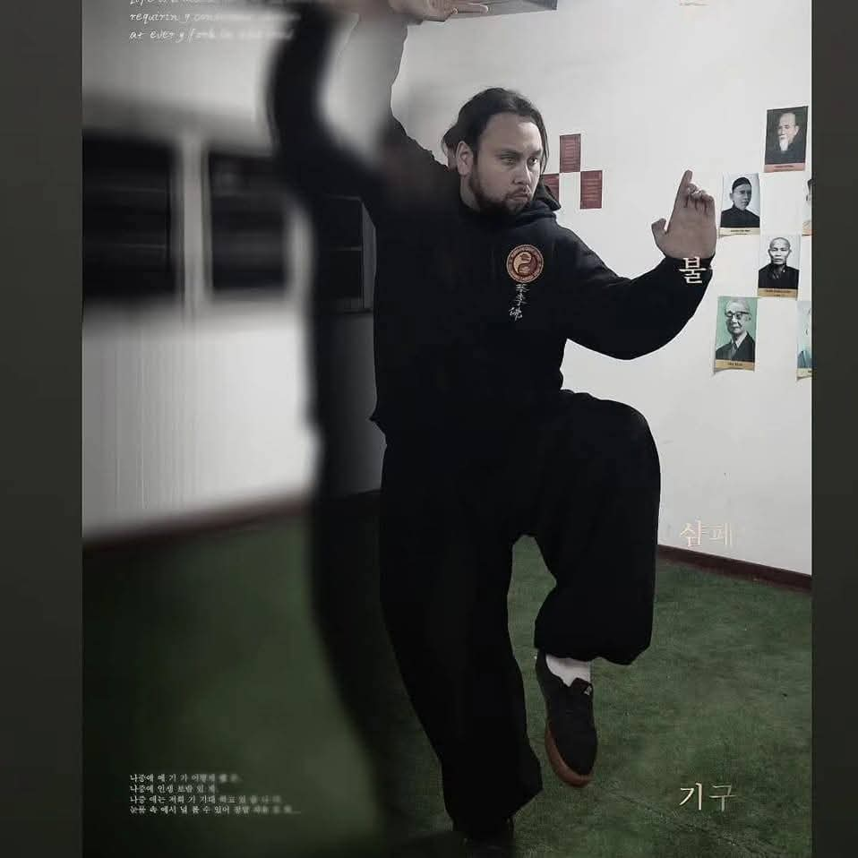

Sifu Long Rinconada.

Manuel Castro
Nacido el 2 de febrero de 1995, Sifu escuela long Rinconada faja negra 1° thuan práctica del kung fu 2006-2010 y 2015-hasta la actualidad
Su misión es transmitir la filosofía del Kung Fu como camino de vida, fomentando la salud física y mental en cada estudiante.
Logros y Trayectoria
- Más de 10 años de experiencia en la práctica del Kung Fu.
- Faja negra 1° Thuan.
- Formación y enseñanza en la Escuela Long Rincónada.
- Desarrollo de alumnos en disciplina, defensa personal y filosofía marcial.
- Participación constante en entrenamientos y perfeccionamiento marcial.
- Promotor del bienestar físico y mental a través del Kung Fu.